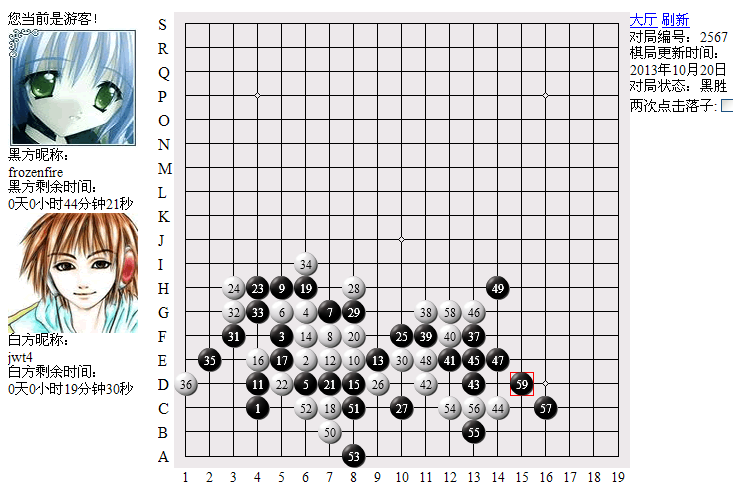

败走麦城——轻敌的后果
作者：【讲五堂】jwt4
【讲五堂】jwt4 vs 【弈星】frozenfire 对战解说
http://game.freewzq.com/offlineDisplayGame.html?html=7786694&id=2567

这是第十一轮的比赛，讲五堂四台VS弈星四台，弈星执黑胜出。讲五堂执白负
和弈星的这轮比赛，赛完后，才知道他们有神秘外援增援。
先前因为不知道有这变故，所以没有加强警惕。
其实从这盘的第11手，就可以发现黑棋很不简单。这个11手完全把白棋牵制住了。
12手我活三后，13手并不如我所想的挡在他的活二点上，而是选择外防。
这棋相当老道了。不过，我的棋也并不含糊。18手后，黑白基本上保持平衡。
19、21和23手破坏了我的三个眠三点。当他活19的时侯，我应该考虑是不是要先冲那二个四呢，假如先冲四，也许后面的棋就不会这么难走了。
28手是个致命的错误。黑29手后，30又走出一招臭棋。连着走出二招昏棋注定了输局的结果。28和30手就是纯粹的直不楞登的傻防。给黑棋反击的机会。
31是做胜招，然后是黑棋在左边一系列的攻击后。棋峰一转，黑37手突然来个穿越，大回旋冲到棋盘的右边做了一手棋。这手棋后，黑棋就像玩猫抓老鼠一样，逼的白棋节节败退。
黑棋的攻击，白棋已无还手之力。黑49手后，已经地毯胜了。白棋利用暂时的先手，在下面做了一个软弱无力的胜招，这个就是钻对手失误的空子。假如对手稍一大脑疲劳，白棋就会偷机成功。但比赛就是比赛，正如赛前的口号一样：家族是进阶，软件是机甲。想钻软件的空子，比登月球还难啊。
白棋的连续错招连连，注定了输棋的后果。不过白棋走的这么臭棋也能坚持到这么多手，很难得哦。